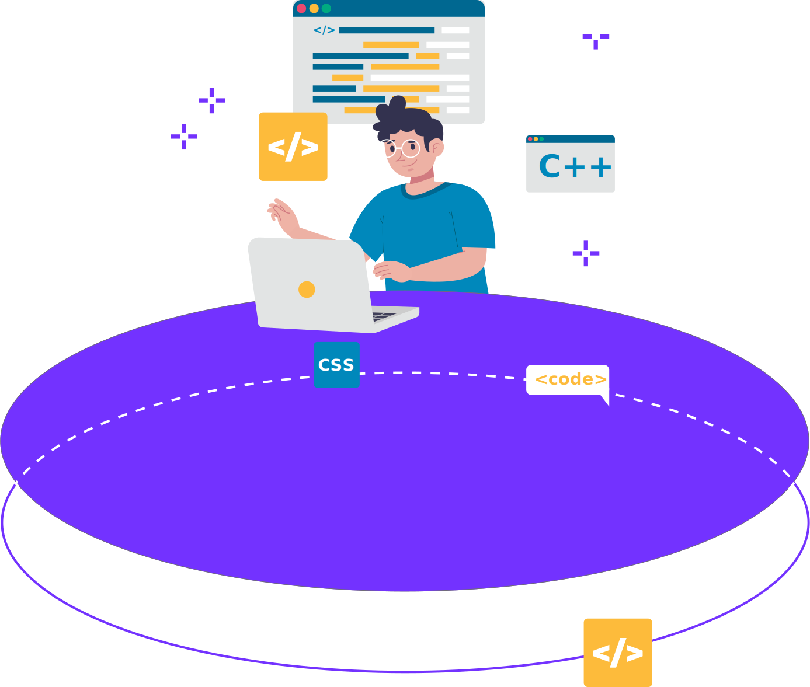
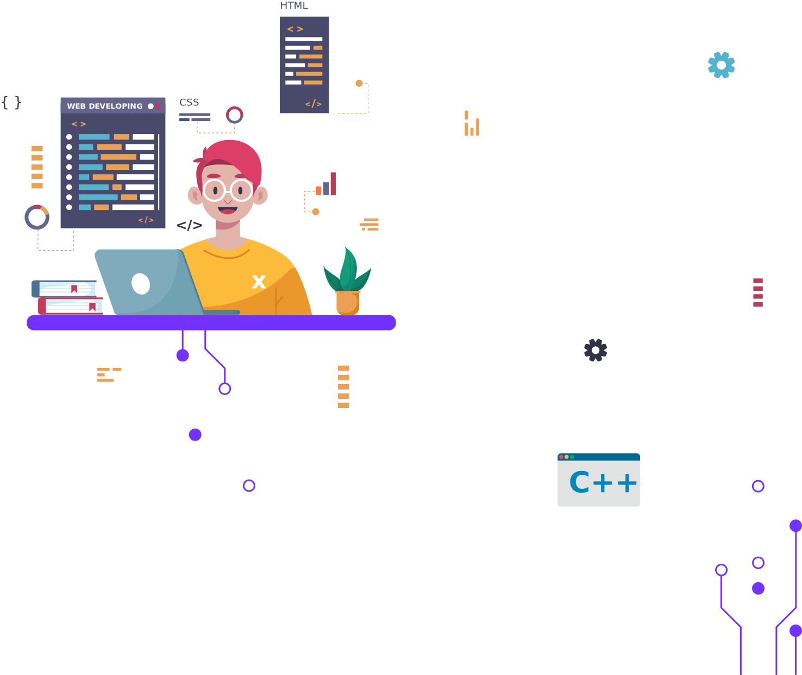

개발자란?
프로그램 만드는 일을 하는, 혹은 그게 직업인 사람

개발자 종류
네트워크.서버.보안
ERP.시스템분석.설계
‘코딩이란?’의 목적
한 번에 개발자에 대한 정보를 얻을 수 있는 통로가 되기 위해서 만든 사이트입니다.
대학교에서 이론적인 것은 배우나, 개발자에 대해 알 수가 없었습니다.
개발자가 되려고 정보를 찾아봤는데, 한 번에 볼 수 있는 사이트가 없었습니다.